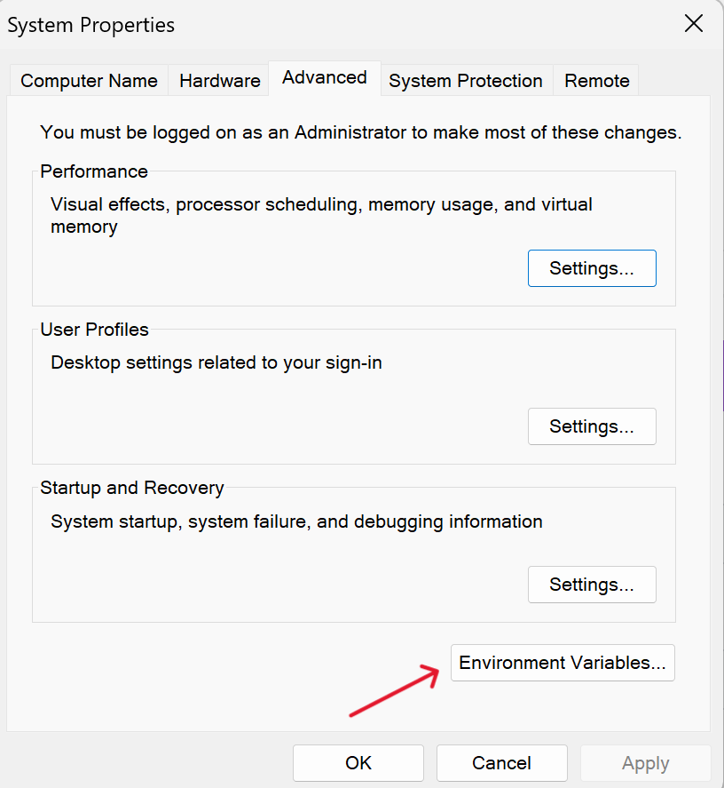

If you've ever come across the "the term pip is not recognized..." error, you know how frustrating it can be.
If you've ever come across the "the term pip is not recognized..." error, you know how frustrating it can be.
pip : The term 'pip' is not recognized as the name of a cmdlet, functioscript file, or operable program. Check
the spelling of the name, or if a path was included, verify that the pais correct and try again.
At line:1 char:1
+ pip
+ ~~~~
+ CategoryInfo : ObjectNotFound: (pip: String) [CommandNotFoundException
+ FullyQualifiedErrorId: CommandNotFoundException
This common issue is related to Python's package manager, pip, not being recognized by the system.
Here's a quick and simple guide to resolving this problem:
Step 1: Ensure Python is Installed
Now this will sound very naive but make sure you have Python installed on your system. If Python was not previously installed on your system, this step will solve the problem for you.
You can download Python from the official Python website.
While installing Python, make sure you check the box which says "Add Python to the environment variables" as shown below:
Step 2: Add Python and pip to Your Path
Adding Python and pip to your system's Path variable ensures that your command line interface recognizes these tools.
This error primarily occurs when the system cannot locate the location where Python is installed. Let's fix this by adding Python and pip to the path
Here's how you can add Python and pip to your path:
- Click on your search icon beside the windows icon and type "Environment Variables"
- Click on the first option "Edit the system Environment Variables". A System Properties window will open. Click on "Environment Variables" 
- Select Path and click on "Edit"
- Click "New" and add the
<location of Python installation> and <Python location>/Scriptsone by one.
You can find the location of your Python installation by typing 'python' in your system's search bar and checking the file path. For me the location of the Python installation is "C:\Users\iitia\AppData\Local\Programs\Python\Python311". Hence I will add "C:\Users\iitia\AppData\Local\Programs\Python\Python311" and "C:\Users\iitia\AppData\Local\Programs\Python\Python311\Scripts" to the path.
Here is what my Python installation folder looks like:
You have to copy this path and add it as an environment variable by pasting it in the edit environment variable dialogue box:
and then open the Scripts folder and copy this path and again click new and add it to the environment variable:

Your "Edit environment variables" dialogue box will look something like this:
Click "Ok" to close all the dialogue boxes, and you are almost done!
Step 3: Restart Your Terminal
Make sure you restart your terminal to apply the changes. Now try to run a pip command, and it should work without any errors.
Conclusion
Fixing the "the term pip is not recognized..." error is a straightforward process once you know the steps. By ensuring that Python and pip are correctly installed and configured, you'll have a smooth coding experience.
If you are not able to find your Python installation folder, it's always recommended to reinstall Python as it will save you a lot of time. While installing Python, make sure you check the box which says "Add Python to the Path". Happy coding!